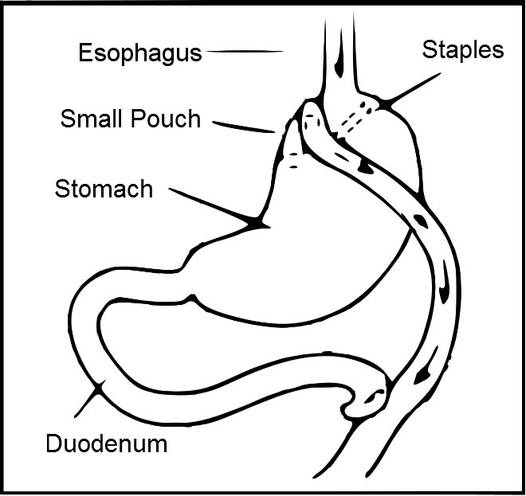
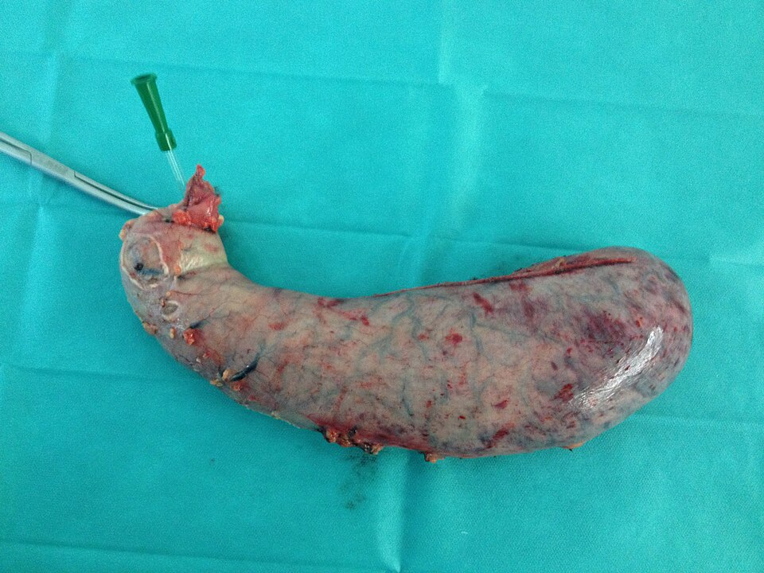

השמנת יתר חולנית
מחלה ולא חולשה: מי מתאים לניתוח, איזה ניתוח, מה מצפים לקבל ומה עושים אחרי
בסוף המפגש תדעו
- להגדיר השמנה חולנית ולמנות את המחלות הנלוות העיקריות
- להסביר למה ניתוח עובד: הגבלה, תת-ספיגה וההורמונים של המעי
- לדעת את ההתוויות לניתוח בריאטרי ואת ההכנה לפניו
- להכיר את הניתוחים העיקריים: שרוול, מעקף Roux-en-Y, BPD-DS ו-SADI-S ואת התוצאות שלהם
- לזהות את סימני האזהרה בימים שאחרי הניתוח
השמנה במספרים
- הגדרה: BMI 40 ומעלה (משקל בק״ג חלקי הגובה במטרים בריבוע). המונח המועדף היום: השמנה חמורה
- השמנה הוכרה כמחלה ב-2013. היא הסיבה השנייה למוות שניתן למנוע בארה״ב, אחרי עישון
- בדיאטה בלבד, הסיכוי לרדת ולהישאר מתחת ל-BMI 35 הוא 3% או פחות
- מנותחים פחות מ-2% מהמטופלים שהיו מרוויחים מניתוח
המחלות הנלוות
- סוכרת מעל 20%, אסתמה מעל 25%
- תסמונת מטבולית: השמנה מרכזית (היקף מותניים מעל 35 אינץ׳ בנשים או 40 בגברים), סוכרת, דיסליפידמיה ויתר לחץ דם
לא רק קיבה קטנה
- רעב שלא נגמר: במטופל עם השמנה חמורה, כמות מזון שמשביעה אחרים לא משביעה. ה"נקודה הקבועה" של האנרגיה במוח עולה
- גנטיקה: FTO, MC4R (הגן הבודד השכיח). גם המיקרוביום
- גרלין ("הורמון הרעב") מופרש ב-fundus. אחרי דיאטה הוא עולה ואחרי שרוול הוא יורד
- GLP-1 מה-distal bowel מגביר הפרשת אינסולין. עולה אחרי מעקף ושרוול ולא אחרי ירידה במשקל בדיאטה. PYY (שובע) עולה בעיקר אחרי מעקף
| ניתוח | הגבלה | תת-ספיגה | מעי-מוח | מעי-לבלב |
|---|---|---|---|---|
| טבעת | ++++ | 0 | 0 | 0 |
| שרוול | ++++ | + | ++++ | ++ |
| מעקף | ++++ | +++ | ++++ | +++ |
| BPD-DS | ++ | ++++ | +++ | ++++ |
"מעי-מוח": שובע ותיאבון. "מעי-לבלב": אינסולין ורגישות לאינסולין
מה הראיות אומרות
- מחקר SOS (שבדיה): 2,010 מנותחים מול 2,037 ביקורות, מעקב מעל 20 שנה. תמותה נמוכה ב-30% (HR 0.70). פחות אוטמי לב
- סוכרת (STAMPEDE ואחרים): ניתוח מוריד HbA1c ב-2–3.5%, טיפול תרופתי ב-1–1.5%. 29–43% מהמנותחים במעקף מגיעים מתחת ל-6, לעומת 5–7%
- בסוכרתיים מנותחים: 71% פחות רטינופתיה ו-69% פחות אי-ספיקת כליות סופנית
- מאושרות להשמנה: ליראגלוטייד, סמגלוטייד, טירזפטייד
- ירידה במשקל מעבר לפלצבו: 12.9% עם סמגלוטייד ו-19.2% עם טירזפטייד
- אחרי הפסקה: שני שלישים מהמשקל חוזרים תוך שנה. בחילות, הקאות ושלשולים
- מקום בפועל: מי שלא מתאים או לא רוצה ניתוח, "גשר" לניתוח, ירידה לא מספקת אחרי ניתוח
התוויות והתוויות נגד
התוויות
- BMI מעל 35, או מעל 30 עם מחלה נלווית שההשמנה מחמירה
- (הקריטריון הישן: מעל 40, או מעל 35 עם מחלה נלווית)
- ניסיון דיאטה שנכשל
- יציבות נפשית, בלי תלות באלכוהול או סמים
- מבין את הניתוח ואת ההשלכות ומוטיבציה
- בלי מחלה שמונעת הישרדות סבירה של הניתוח
הכנה של צוות
- צוות: מנתח, תזונאית, פסיכולוג או פסיכיאטר, אחות מתאמת, הרדמה ורופאים מומחים לפי הצורך. הדרכה קבוצתית חובה
- דום נשימה בשינה: נחירות, נרדם בנהיגה, עייפות: בדיקת שינה. CPAP אחרי הניתוח מפחית סיבוכים
- לב: כאב חזה או ירידה בסבולת מאמץ: הערכה קרדיולוגית
- רפלוקס: גסטרוסקופיה (ברט, בקע סרעפתי)
- כבד שומני גדול: דיאטה דלת קלוריות 5–10 ימים לפני
ה-stomach בעיני המנתח הבריאטרי

👆 לחצו על אזור בציור כדי לקרוא עליו
כאן מופרש הגרלין. בשרוול כורתים אותו עד ה-angle of His וחושפים את ה-left crus. במעקף משאירים אותו מחוץ לכיס הקטן
בשרוול משחררים את כל ה-greater curvature ומשדכים לאורך בוז׳י 34–40 Fr. נשאר שרוול צינורי על ה-lesser curvature
בשרוול מתחילים לשדך 3–5 ס״מ מה-pylorus ולא מצרים את ה-incisura angularis: שם נוצרות היצרות ודליפות. ה-pylorus נשמר ולכן אין דמפינג
שומרים על ה-left gastric vessels. במעקף בונים כאן כיס קטן של 15–30 מ״ל. בטבעת עוברים דרך החלק הדק (pars flaccida)
מחובר ל-stomach ב-short gastric vessels, שמחלקים בשרוול. זהירות מפגיעה ב-spleen ומחום של מכשיר האנרגיה
במעקף מעלים את לולאת ה-Roux מלפני ה-transverse colon (antecolic): פחות פתחים ב-mesentery, פחות בקעים פנימיים
ארבעה ניתוחים עיקריים


כמה יורדים ומה משתפר
| ניתוח | ירידה מעודף המשקל | תמותה | נקודות חשובות |
|---|---|---|---|
| שרוול | 53–62% | 0.08% | 57.5% מהניתוחים בארה״ב ב-2022. רפלוקס חדש או מחמיר |
| מעקף | 57–67% | 0.11% | 22.2% מהניתוחים. צרבת חולפת מיד ביותר מ-90% |
| BPD-DS / SADI-S | 74–78% | 0.4–0.6% | הפוגת סוכרת מעל 85%. ויטמינים ומעקב לכל החיים |
| טבעת | 44–46% | 0 | הרבה ניתוחים חוזרים, ירידה לא מספקת |
הדליפה מסתתרת מאחורי טכיקרדיה
- צורך בנוזלים גבוה מהצפוי, מיעוט שתן וטכיקרדיה: בעיה בבטן עד שהוכח אחרת
- נוזלים: כ-4 מ״ל לק״ג לשעה. לא לתת משתנים לפני שהמטופל מלא
- ERAS: שיכוך בלי אופיואידים ככל האפשר, בלי משאבת PCA, הליכה מוקדמת
- לילה אחד באשפוז ושחרור על דיאטה נוזלית מלאה
- הקאות ממושכות: תיאמין לפני שמופיעה אנצפלופתיה של Wernicke. הנזק לא תמיד הפיך
- דיכאון: מטופל שמפסיק לאכול "ומצליח" יותר מדי. גם עלייה בהתאבדויות ופגיעה עצמית: מעקב נפשי
- תסחיף ריאתי: 17% ממקרי המוות
מבט על (פירוט במפגש הבא)
- דליפה: מתחת ל-1% היום
- בקע פנימי וחסימה: CT וניתוח
- היצרות בחיבור: 2–7%
- כיב בחיבור: 2–14%
- חוסר ברזל ו-B12
- דליפה: 0.3–0.5%, לרוב 1–4 שבועות אחרי
- היצרות באינציזורה: פחות מ-1%
- רפלוקס: הסיבה העיקרית להמרה למעקף
- תת-תזונה של חלבון: 8% אחרי BPD-DS
- חוסר בוויטמינים מסיסי שומן: A, D, E, K
- 2–4 יציאות ביום
לפני, בזמן ואחרי
- לפני: לפי שיקול המנתח. ב-7.6% מהמטופלים הממצאים דחו או שינו את הניתוח
- בזמן הניתוח: בדיקת דליפה: מנפחים אוויר ב-stomach מתחת לסליין ומחפשים בועות. אפשר גם לעצור דימום מקו השדכנים
- אחרי: סטנט מכוסה לדליפה (4–6 שבועות) ואקום אנדוסקופי לחלל (8–12 טיפולים), הרחבה בבלון להיצרות (עד 3–5 מ״מ בכל פעם)
הנחיות ומחקרים שכדאי להכיר
מחליפות את קריטריוני 1991: ניתוח מומלץ ב-BMI מעל 35 גם בלי מחלות נלוות ויישקל ב-30–34.9 עם מחלה מטבולית. באסיה מעל 27.5. גם מתבגרים נבחרים
Eisenberg D et al. Obes Surg 2023;33:3-141,351 מטופלים ב-12 בתי חולים בבריטניה. ירידה של 50% מהעודף אחרי 3 שנים: מעקף 68%, שרוול 41%, טבעת 25%. המעקף היה גם המשתלם ביותר
By-Band-Sleeve Collaborative Group. Lancet Diabetes Endocrinol 2025;13:410-262,539 מבוגרים עם השמנה בלי סוכרת, 72 שבועות. ירידה ממוצעת של 20.9% במשקל במינון 15 מ״ג, לעומת 3.1% בפלצבו
Jastreboff AM et al. N Engl J Med 2022;387:205-1617,604 מטופלים עם מחלת לב וכלי דם והשמנה, בלי סוכרת. אירועים לבביים קשים 6.5% לעומת 8.0% (HR 0.80). 16.6% הפסיקו בגלל תופעות לוואי
Lincoff AM et al. N Engl J Med 2023;389:2221-32חמישה דברים לקחת למחלקה
- השמנה חמורה היא מחלה מטבולית. ניתוח מאריך חיים ומשפר סוכרת, לחץ דם ודום נשימה
- התוויה היום: BMI מעל 35, או מעל 30 עם מחלה נלווית, אחרי ניסיון שמרני ובמטופל מוכן
- שרוול ומעקף הם רוב הניתוחים. מעקף עדיף כשיש רפלוקס
- אחרי ניתוח בריאטרי, טכיקרדיה היא דליפה עד שיוכח אחרת
- הקאות ממושכות: תיאמין. אחרי מעקף: ברזל, B12 ומעקב לכל החיים